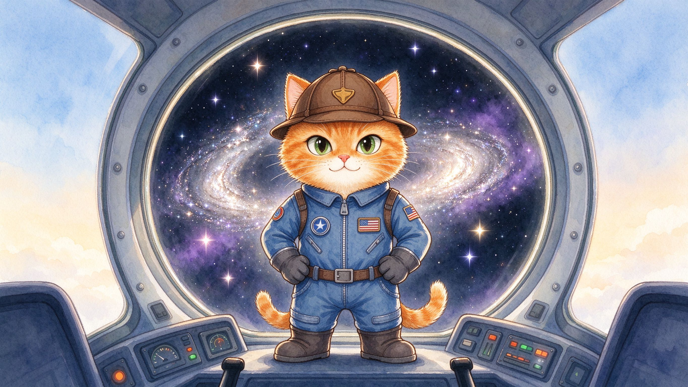
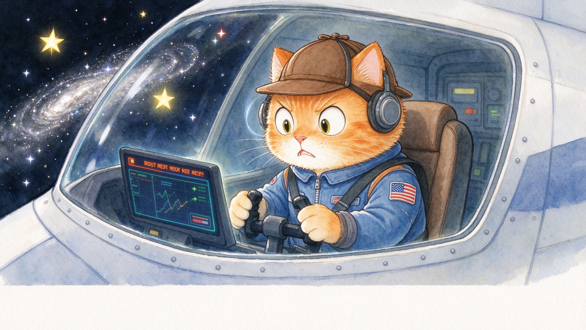
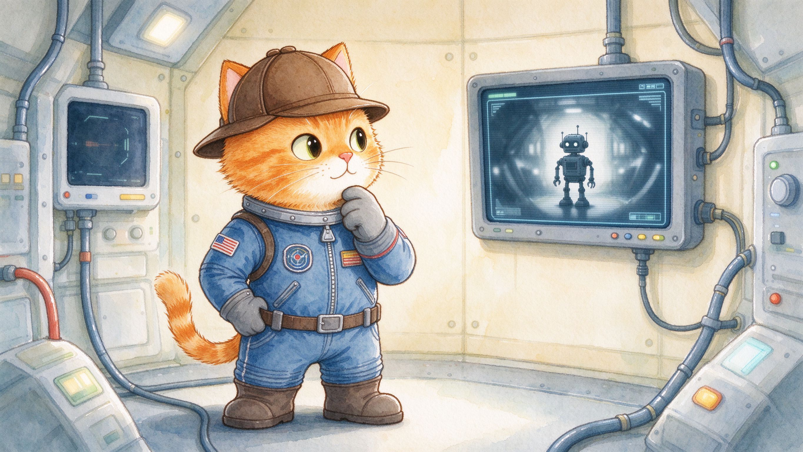
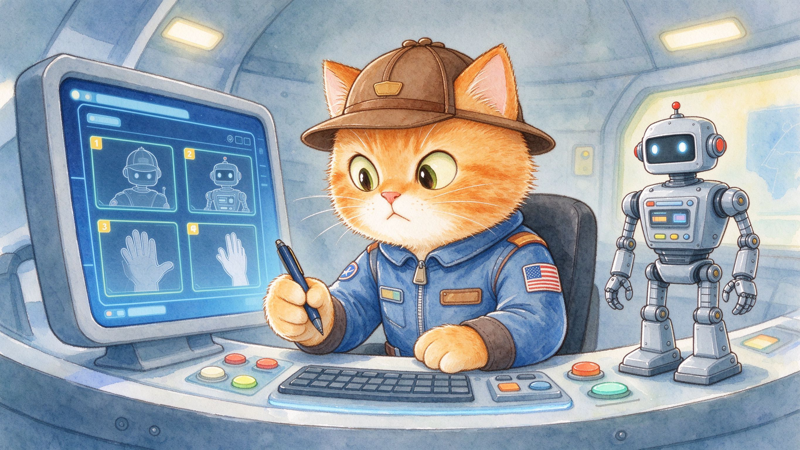
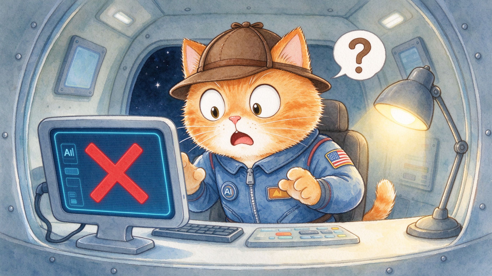
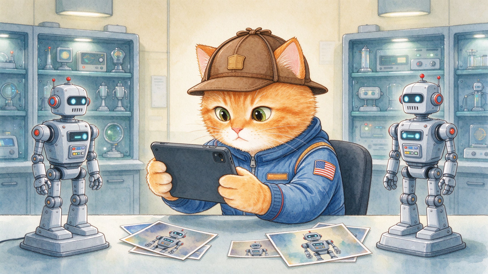
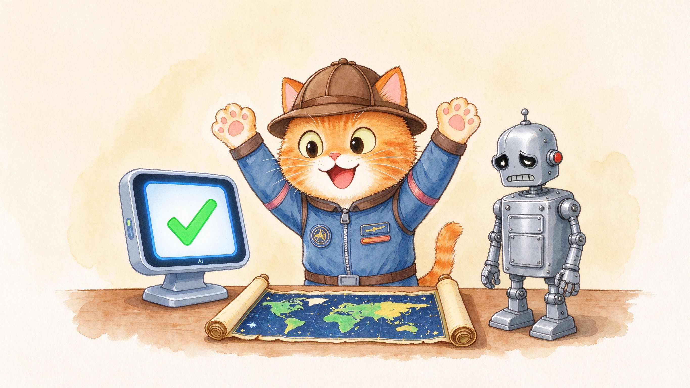
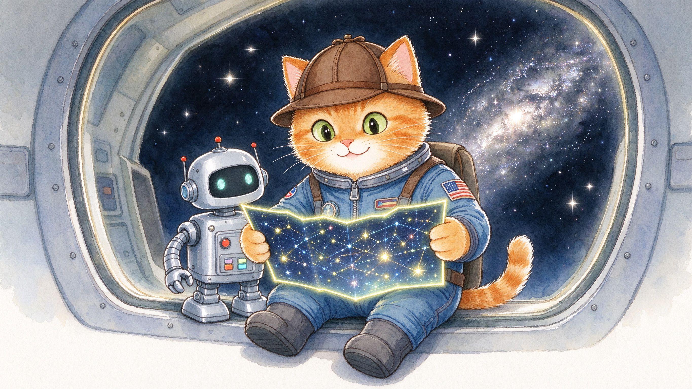

在好遠好遠的銀河，住著一位太空貓偵探。有一天，他收到緊急訊息：「星際地圖被偷走了！」

太空貓展開調查，可是監控影片太模糊，只看到一個機械人的黑影。「線索這麼少，怎樣找到小偷呢？」

太空貓有法寶——AI偵測器！他錄下機械人的影像做「數據」，讓AI「學習」規律，再叫AI「預測」誰是小偷。

「咦，AI認錯人了！它把枱燈當成機械人！」原來樣本不夠多、動作不夠清晰，AI也會犯錯。

太空貓沒有放棄：「樣本不夠，就加多一點！」他拍下不同角度的機械人照片，重新訓練AI。

「這次認出來了！」AI找出小偷——銀河鐵皮機械人！太空貓捉住他，取回星際地圖。

太空貓說：「AI不是天生就懂，是靠好多好多數據學回來的！」記得三步曲：數據、學習、預測！